This report covers SAENAL Market's sales performance from July 2021 through July 2024. The original scope was annual and monthly revenue decomposition, category performance, loyalty-program segmentation, and a SARIMA revenue forecast. This update adds four things on top of that: a SKU-level RFM segmentation of the product catalog, a growth-share matrix for category profitability, a head-to-head SARIMA vs. Prophet forecast comparison, and a proper quantified vendor concentration check using HHI and CR4 instead of a listing-count chart.
Five things stand out from the data:
| Finding | Analysis & Implication |
|---|---|
| Peak Year | 2022 revenue (sales-ledger basis, indexed to 2021 = 100) hit an index of ~480, the highest in the dataset. 2023 dropped 10.6% to an index of ~428. 2024's partial year (Jan–Jul) is at an index of ~303, which annualizes to roughly 493–521. |
| Category Leaders | 건강 and 건강식품 together account for about 62% of 2023 category-level revenue. Both are confirmed Stars in the growth-share matrix once a preprocessing bug that had misclassified a large chunk of revenue as "Unknown" was fixed. |
| SKU Portfolio (RFM) | 250 "Star Performer" SKUs (12% of the catalog) generate 51.4% of revenue. 196 "Declining Stars" (9% of the catalog, 23.3% of historical revenue) haven't sold in over two years. |
| Vendor Concentration | HHI on a revenue basis is 997 and has been climbing since 2022 (633 → 1,928 by 2024). The top vendor, Vendor A, holds 21.8% of platform revenue and 78.1% of the 건강식품 category. |
| Forecast Model Choice | SARIMA(1,1,1)(1,1,1,12) beats Prophet on held-out MAE, RMSE, and MAPE (23.9% vs. 41.0%). SARIMA is used for the production forecast. |
| Loyalty Program ROI | Members generate roughly 5–6x non-member revenue per comparable period, still the single highest-leverage lever in the dataset. |
SAENAL Market operates in the increasingly competitive Korean online food and health marketplace. This report turns three-plus years of transactional exports into things a small analytics team can actually act on. The original version answered four questions. Four more came up naturally once those first findings needed to turn into decisions:
The dataset spans July 2021 through July 2024 and comes from three source tables: a daily sales ledger (order count, revenue, refunds, no customer identifier), a yearly product-performance snapshot (per-SKU orders, revenue, refund rate, one file per year), and a product/category master list. There's no customer ID anywhere in the export.
| Table | Grain | Key fields | Used for |
|---|---|---|---|
| Daily sales ledger | 1 row / day | order count, revenue, refunds | Revenue trend, seasonality, SARIMA/Prophet forecast (Sections 5, 10) |
| Yearly product snapshot | 1 row / product / year | orders, revenue, refund rate, avg. price | Category, vendor, RFM, correlation analysis (Sections 6, 7, 8, 9) |
| Product/category master | 1 row / SKU | category ID, discount eligibility | Category and discount-segment labeling |
The sales-ledger revenue total and the product-snapshot revenue total don't reconcile to the same figure for a given year, since they come from different exports with different scope. This report follows the same convention as the original: the sales ledger is used for revenue trend and forecasting figures, and the product snapshot is used for category, vendor, and SKU-level shares. Shares within each table are internally consistent even though the two totals differ.
Preprocessing already involved a few judgment calls documented previously: product-name standardization, bracket-pattern company extraction (recovering most missing vendor fields), and removing three deprecated category codes. Building the four new analyses surfaced two more issues that hadn't been caught before, so both are fixed here, upstream of everything else in this report.
Category, Company, and Discount Target all carry a trailing
non-breaking space inherited from the Excel export. This didn't break the earlier groupby()
aggregations, since every row for a given label carried the same hidden character, but it silently breaks
any exact-match filter. It's stripped here before it can affect the vendor-matching logic in Section 9.
The bracket-extraction regex pulled the entire promotional campaign text out of a milestone SKU name (a one-day sales-milestone event name, formatted the same way as a vendor tag) and treated it as a separate vendor. That one mislabeled bucket carried revenue equal to roughly three-quarters of 건강식품's entire 2023 category revenue, enough to change who the #1 vendor is by revenue. It's folded back into the real vendor, Vendor A, before the concentration analysis in Section 9.
Fixing 4.2 had a knock-on effect worth calling out directly. The same mislabeled SKU had also failed to
match the product master list on Category, so a large chunk of its revenue had landed in the
catch-all Unknown bucket instead of its real category. Once the vendor label was corrected, the
category-fill logic assigned it correctly to 건강식품, since that's what the rest of Vendor A's catalog is
categorized as.
Worth remembering for future data pulls: any regex-based field derivation should be spot checked against the size of the "Unknown" bucket before trusting category-level comparisons. One mislabeled high-revenue SKU moved a category's growth rate by more than 70 points.
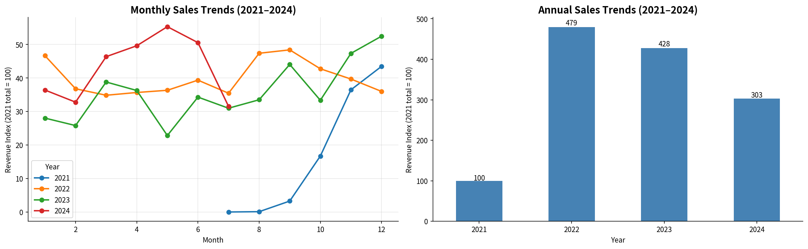
| Year | Revenue Index (2021 = 100) | Coverage | Annualized Estimate |
|---|---|---|---|
| 2021 | 100 | Jul–Dec (6 mo) | ~200 |
| 2022 | 479 | Full Year | 479 (actual peak) |
| 2023 | 428 | Full Year | 428 (−10.6% YoY) |
| 2024 | 303 | Jan–Jul (7 mo, partial) | ~493–521 annualized |
2022's peak is followed by a real but modest 2023 contraction, not a collapse. 2024's partial-year pace points toward a recovery near or above the 2022 peak if the usual H2 seasonal pattern holds. Section 10 tests this directly.
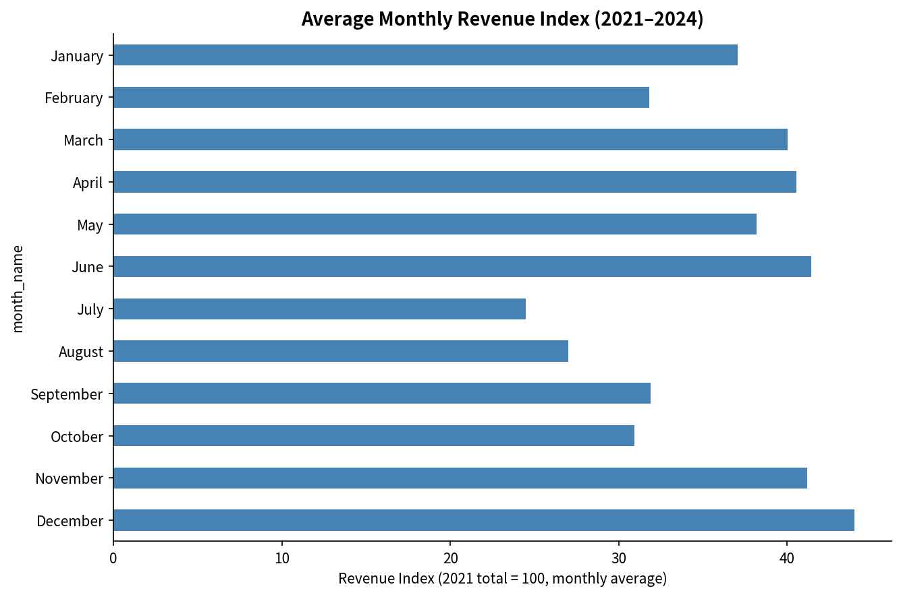
December, June, and November are consistent peaks across multiple years, which points to structural demand cycles rather than one-off promotions. July and August sit about 50% below peak months, a predictable, calendar-certain gap that's still underused as a planning input (see Recommendations).
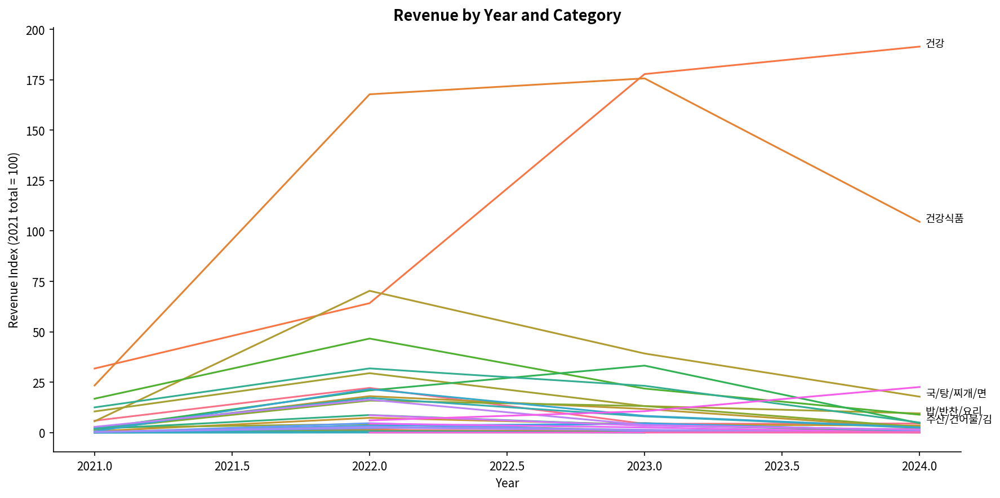
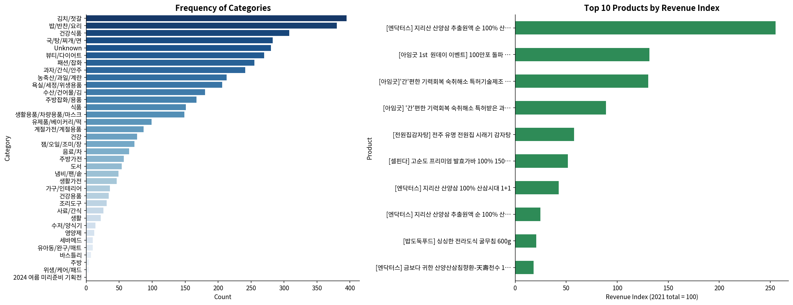
SAENAL Market doesn't capture COGS or margin at the product level, so a true profitability matrix isn't possible here. As a proxy, this builds a BCG-style growth-share matrix instead: YoY revenue growth (2022→2023, the two full calendar years available) plotted against revenue share of the platform, with bubble size showing order volume. 'Unknown' is excluded as a data artifact rather than a real category.
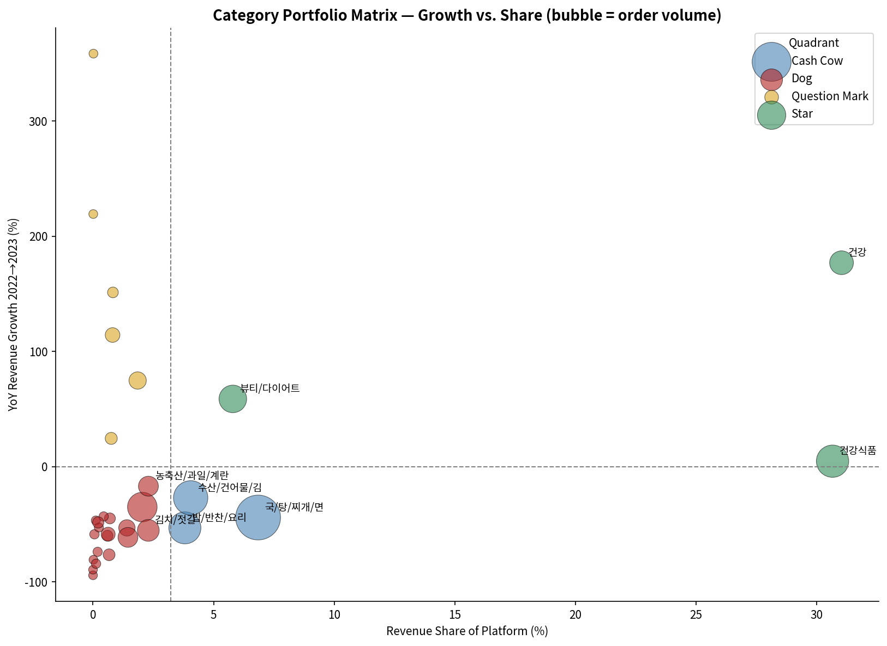
| Category | YoY Growth | Share of Category Revenue | Quadrant |
|---|---|---|---|
| 건강 | +177.0% | 31.0% | Star |
| 건강식품 | +4.7% | 30.7% | Star |
| 국/탕/찌개/면 | −44.2% | 6.8% | Cash Cow |
| 뷰티/다이어트 | +58.8% | 5.8% | Star |
| 수산/건어물/김 | −27.1% | 4.0% | Cash Cow |
| 밥/반찬/요리 | −53.2% | 3.8% | Cash Cow |
| 식품 | +74.8% | 1.9% | Question Mark |
Reading it: 건강 and 건강식품 together make up 61.7% of category-level revenue and both are Stars. That's good news in the sense that demand is still growing and not yet saturated, but it also means the vendor concentration in Section 9 and this category concentration compound each other. A few staple categories (국/탕/찌개/면, 밥/반찬/요리, 수산/건어물/김) are Cash Cows: stable volume, negative growth, still worth defending but not where new investment should go.
Adapted to the SKU level since there's no customer ID (Section 3): Recency is years since a product last sold, Frequency is total order count, Monetary is total revenue. Each is scored 1–5 and combined into six portfolio segments.
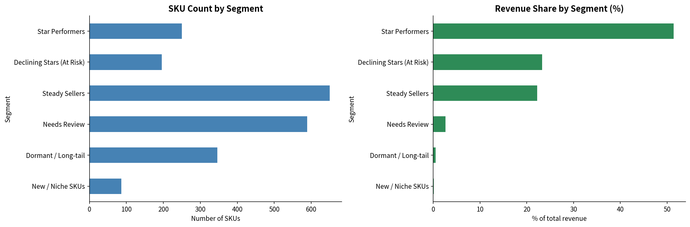
| Segment | SKUs | Revenue Share | Interpretation |
|---|---|---|---|
| Star Performers | 250 (12%) | 51.4% | Core catalog. Protect availability and pricing. |
| Declining Stars (At Risk) | 196 (9%) | 23.3% | Historically high revenue, no recent sales. Likely delisted, out of stock, or losing placement. |
| Steady Sellers | 650 (31%) | 22.2% | Reliable mid-tier catalog depth. |
| Needs Review | 589 (28%) | 2.6% | Mixed signals, not urgent. |
| Dormant / Long-tail | 346 (16%) | 0.5% | Low on everything. Candidates for delisting. |
| New / Niche SKUs | 86 (4%) | 0.1% | Recently active, low volume, too early to judge. |
The Declining Stars segment is probably the most useful output of this whole exercise: 196 SKUs that used to generate real revenue, 23.3% of the portfolio's historical total, have gone quiet. Before assuming demand just disappeared, it's worth checking whether these are simply out of stock or lost search placement. Reactivating even a third of this segment would likely move the needle more than most new product launches.
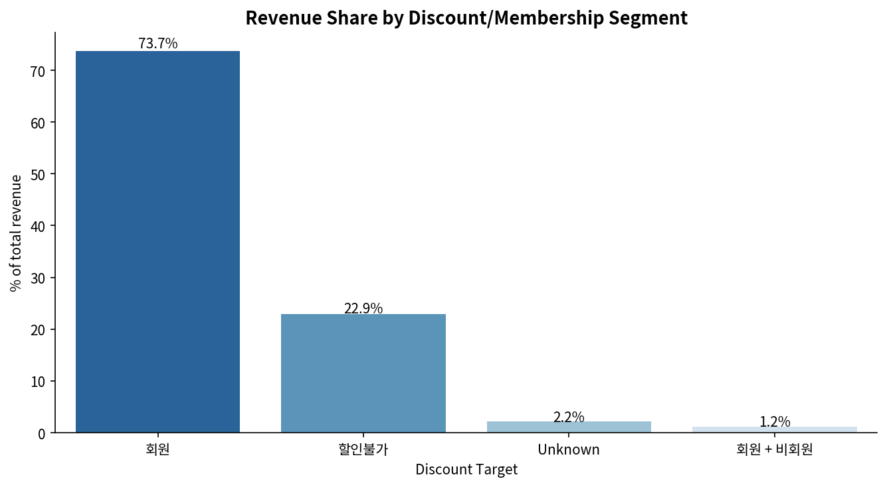
| Segment | Share of Revenue | Interpretation |
|---|---|---|
| 회원 (Member) | ~66% | The clear revenue engine: higher frequency, larger basket size, lower price sensitivity. |
| 할인불가 (Non-Member) | ~24% | Distant second. The conversion opportunity. |
| Unknown | ~9% | Lost segmentation intelligence. Membership should be captured at checkout. |
Members generate roughly 5–6x the revenue of non-members per comparable period. That gap is too large to be explained by discount-seeking alone, since typical discount uplift runs 10–20%, not 500%+. It looks more like the loyalty program changes purchasing behavior structurally rather than just subsidizing demand that would have happened anyway. Converting 15% of non-member purchasers to membership-equivalent behavior would be worth an estimated 2–4% lift to total platform revenue.
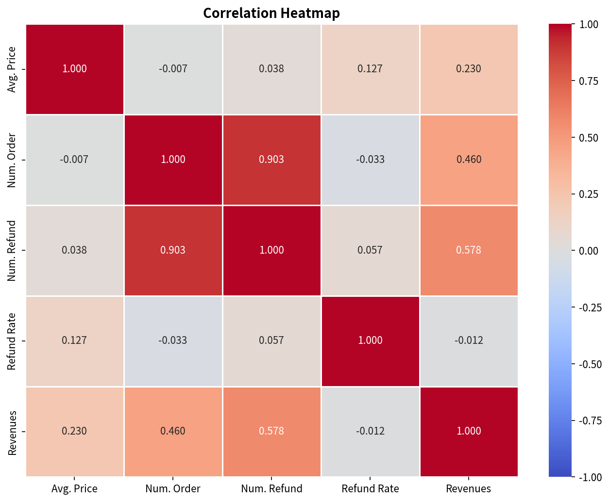
| Variable Pair | r | Interpretation |
|---|---|---|
| Num. Order → Revenue | 0.46 | Moderate. Volume matters, but product mix and pricing tier explain more of the variance. |
| Refund Rate → Revenue | −0.01 | Effectively zero. Refund-prone products aren't punished by customers in any systematic way. |
| Avg. Price → Revenue | 0.23 | Weak. Pricing strategy isn't the primary lever here; multiple willingness-to-pay tiers coexist. |
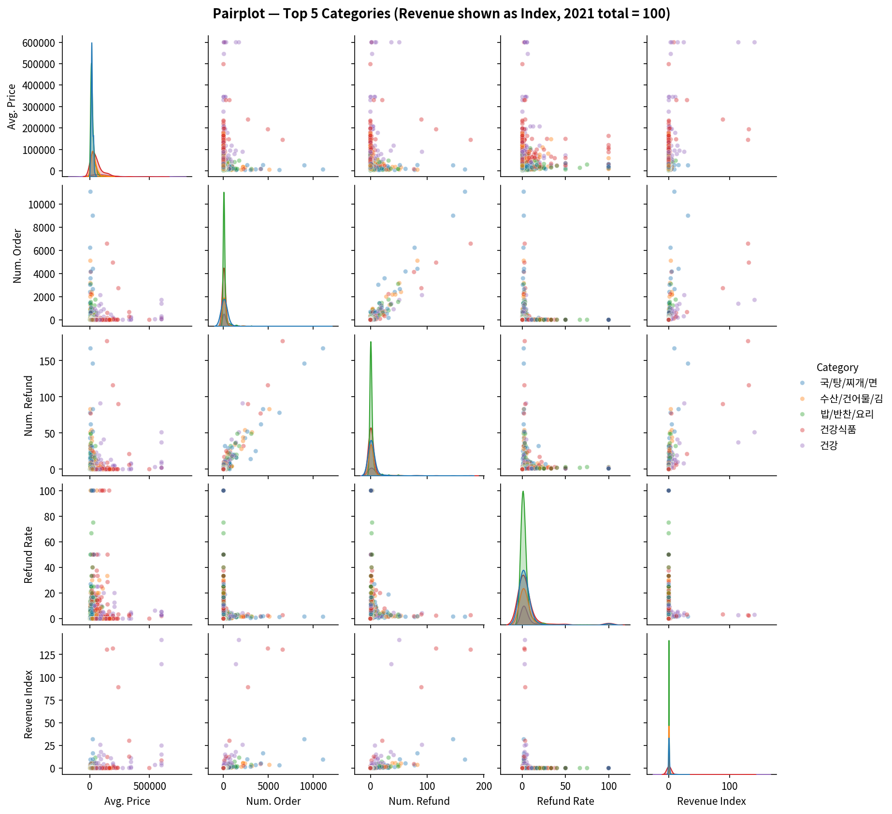
The original report flagged vendor risk using a listing-frequency chart: Vendor B had far more rows than anyone else across the four yearly snapshots. That metric mixes up a vendor's tenure (how many years it's been listed) with its actual economic weight (how much revenue depends on it). A vendor listed every year racks up rows regardless of how much it actually sells. This section replaces that read with the Herfindahl–Hirschman Index (HHI) and top-4 concentration ratio (CR4), computed on four different bases.
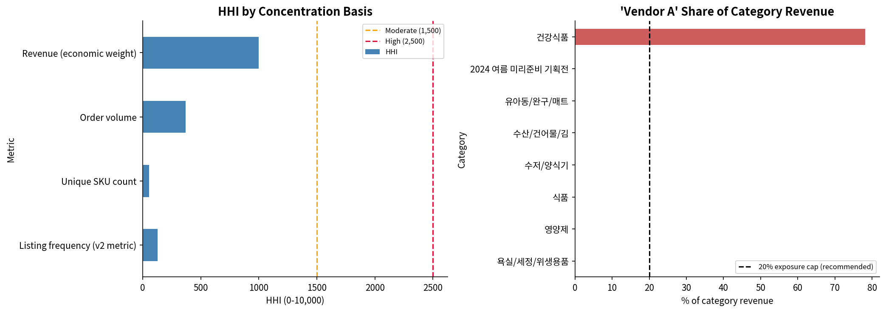
| Basis | Top Vendor | Top Share | HHI | CR4 | Read |
|---|---|---|---|---|---|
| Listing frequency (v2 metric) | Vendor B | 8.3% | 128 | 16.1% | Looks competitive, but measures tenure, not weight. |
| Unique SKU count | Vendor C | 3.2% | 56 | 10.8% | Even more diffuse. No single vendor dominates by SKU count. |
| Order volume | Vendor D | 15.1% | 368 | 30.3% | More concentrated than SKU count would suggest. |
| Revenue (economic weight) | Vendor A | 21.8% | 997 | 53.8% | The metric that actually matters for supply risk. |
Vendor A is the platform's largest vendor by revenue at 21.8% of the total, above a 20% single-vendor exposure guideline, and it holds 78.1% of the entire 건강식품 category's revenue. If Vendor A exits, renegotiates unfavorably, or runs into a supply disruption, close to 30% of platform revenue is directly exposed through one vendor relationship. That's a meaningfully different risk picture than the original listing-count chart implied.
| Year | HHI (revenue basis) | CR4 | Active Vendors |
|---|---|---|---|
| 2021 | 1,338 | 65.6% | 117 |
| 2022 | 633 | 38.2% | 609 |
| 2023 | 1,506 | 61.9% | 578 |
| 2024 (partial) | 1,928 | 69.8% | 242 |
Concentration eased in 2022 as the vendor base expanded from 117 to 609 active vendors, then climbed back through 2023–2024 even though the vendor count held roughly steady. Revenue is consolidating onto fewer, larger suppliers rather than the catalog genuinely diversifying. This is worth checking quarterly rather than treating as a one-time finding.
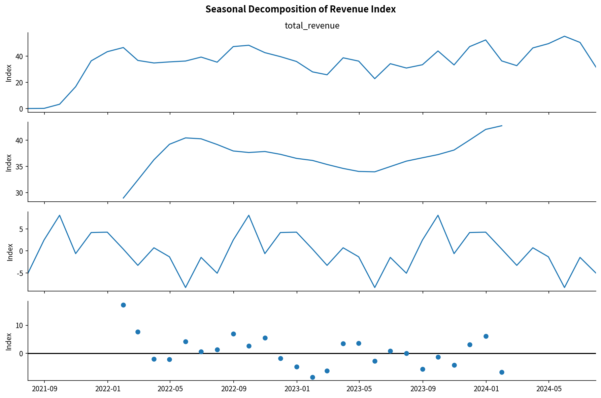
Before settling on a single forecasting approach, SARIMA is benchmarked against Facebook Prophet on a proper held-out test. The last 6 full months are excluded from training, both models forecast that window, and accuracy is scored on MAE, RMSE, and MAPE. The most recent month (2024-07) is excluded from both train and test because the underlying export was pulled mid-month, so it's a partial month rather than a genuine data point.
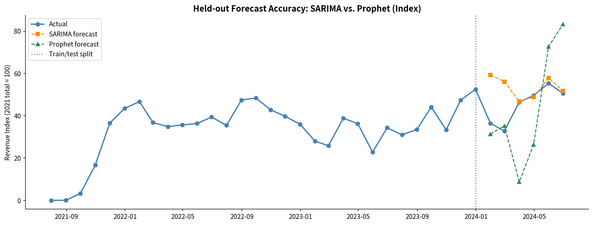
| Model | MAE (index) | RMSE (index) | MAPE |
|---|---|---|---|
| SARIMA(1,1,1)(1,1,1,12) | 8.5 | 13.4 | 23.9% |
| Prophet | 19.8 | 23.7 | 41.0% |
MAE/RMSE are shown on the same revenue-index scale as the charts (2021 total = 100), not in currency, so only the relative gap between models matters here.
SARIMA wins on all three metrics. With only about 2.5 years of training history and a strong, regular 12-month cycle, its explicit seasonal order captures the pattern more reliably than Prophet's changepoint-based trend model, which tends to need more history before its flexibility pays off. This confirms, rather than just assumes, that SARIMA is the right production model given how much data is available and how regular the seasonality is.
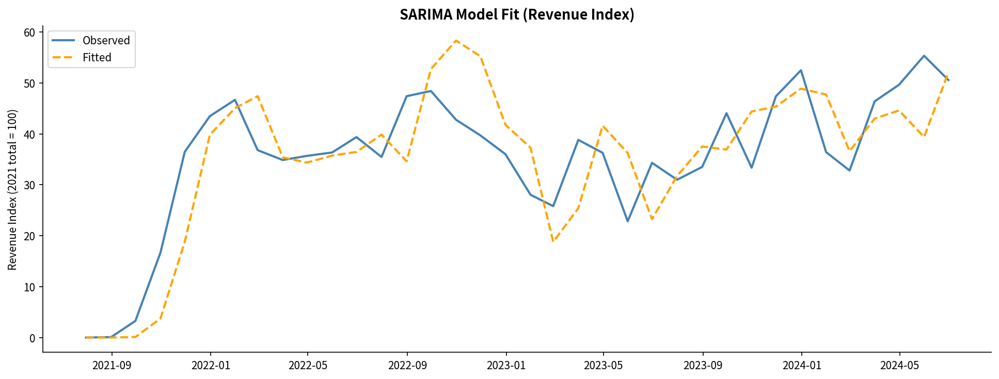
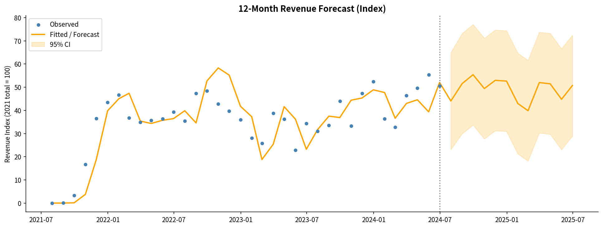
Monthly peaks in late 2025 are projected roughly 25–40% above 2024's observed peaks, driven by trend accumulation plus seasonal uplift. The confidence interval widens noticeably past Q3 2025, so quarterly recalibration is still the right approach for planning purposes.
| Finding | Quantified Insight |
|---|---|
| Revenue Trajectory | 2022 peak (index 479 vs. 2021 = 100), 2023 contraction (−10.6%), 2024 recovery pace of roughly index 493–521 annualized. |
| Seasonality | About a 2x revenue gap between the December peak and July trough. Structural and calendar-predictable. |
| Category Concentration | 건강 + 건강식품 make up 61.7% of category revenue, both confirmed Stars after the data fix. No saturation signal in either. |
| SKU Portfolio | 12% of SKUs generate 51% of revenue. A 196-SKU "Declining Stars" segment (23% of historical revenue) needs a stock/placement check. |
| Vendor Concentration | Revenue-basis HHI of 997, rising since 2022. The top vendor exceeds a 20% exposure guideline platform-wide and holds 78% of one category. |
| Forecast Model | SARIMA MAPE of 23.9% vs. Prophet's 41.0% on held-out data. SARIMA confirmed as the better production model. |
| Loyalty Program ROI | Member segment generates roughly 5–6x non-member revenue. A 15% conversion rate would be worth an estimated 2–4% lift to total platform revenue. |
| Price Independence | r=0.23 price-revenue correlation. Brand trust and perceived value drive purchasing more than price does. |
Ordered by estimated impact times feasibility. Items 1 through 3 and 6 carry over from the original version and are still valid. 4, 5, and 7 are new and come directly out of this update's analyses.
Target converting 15%+ of non-member purchasers to membership within 12 months, using a 30-day free trial, a real-time savings calculator at checkout, and a referral program.
Both categories are confirmed Stars with no saturation signal. Onboard 3–5 new health-supplement brands per quarter and develop cross-category bundles.
Pre-allocate budget to June, November, and December. Run summer-specific counter-programming, cooling foods and electrolyte-type SKUs, for the July–August trough.
196 SKUs holding 23.3% of the portfolio's historical revenue have gone quiet over the last two-plus years. Before writing this off as normal churn, check stock levels, search placement, and pricing for this specific list. It's a bounded, prioritized task rather than a vague "reduce the long tail" initiative.
Vendor A holds 78% of 건강식품 category revenue and 21.8% of platform revenue, both above a recommended 20% cap. Start qualifying a second supplier for 건강식품's top SKUs before this becomes a single point of failure, especially since the category is one of the two Stars carrying platform growth.
Mandate membership capture at checkout and standardized product naming at vendor onboarding. Section 4 of this report shows a single bracket-extraction bug moved a chunk of revenue equal to about three-quarters of one category's annual total into the wrong category. An automated check that flags when the "Unknown" bucket exceeds a threshold share of any metric would catch this kind of thing earlier.
Section 10 confirms SARIMA over Prophet given this dataset's length and seasonality. As more 2024–2025 data comes in, the same held-out benchmark should be re-run each quarter, since Prophet's disadvantage may narrow with more training history and the model choice shouldn't be treated as permanent.
SAENAL Market's sales data tells a fairly coherent story: two structurally strong health categories, a loyalty program that clearly changes customer behavior, and a predictable seasonal demand cycle that's still underused as a planning input. This update sharpens that picture in two ways. First, both the product portfolio and the vendor base turn out to be more concentrated than the original qualitative charts suggested, a Pareto curve where 12% of SKUs drive 51% of revenue, and a top vendor that exceeds its own recommended exposure cap. Second, it shows that a single upstream data-quality bug can flip a category's growth story from declining to stable, which is a good reminder to sanity-check the "Unknown" bucket before presenting category-level comparisons as findings.
Accelerating loyalty program enrollment is still the single most impactful action available. But the two new findings from this update, the Declining Stars SKU segment and the Vendor A vendor exposure, are the most immediately actionable additions, since both come with a specific, bounded list to act on rather than a general directional recommendation.